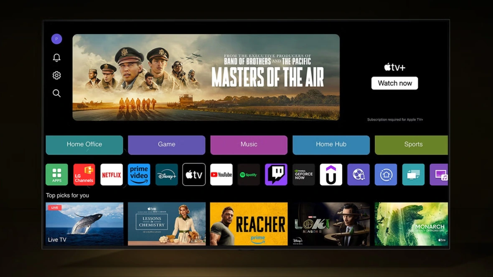
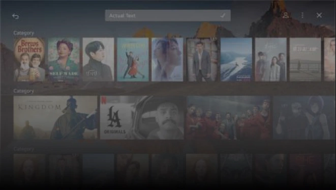
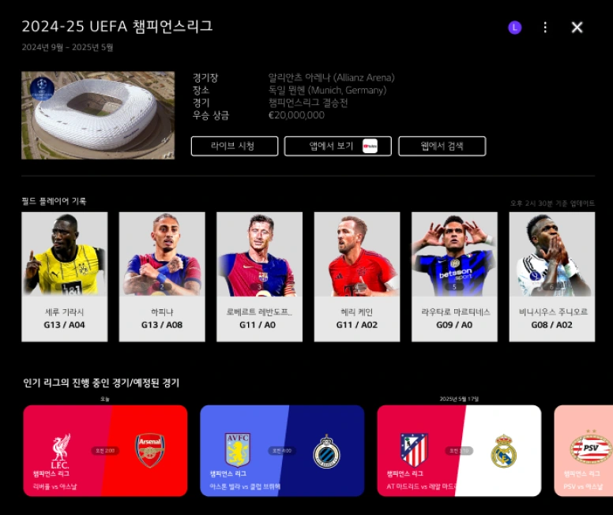
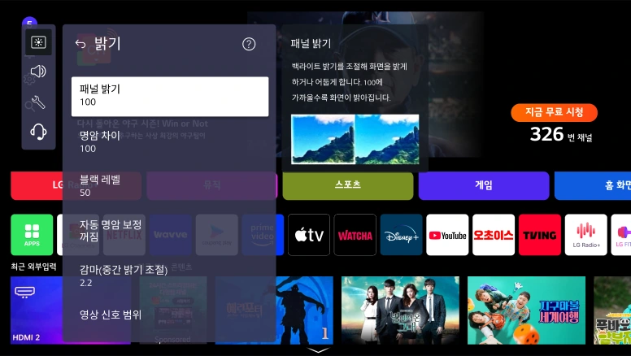
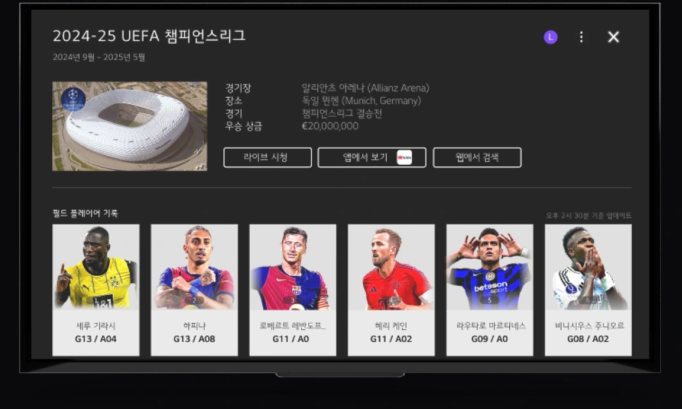
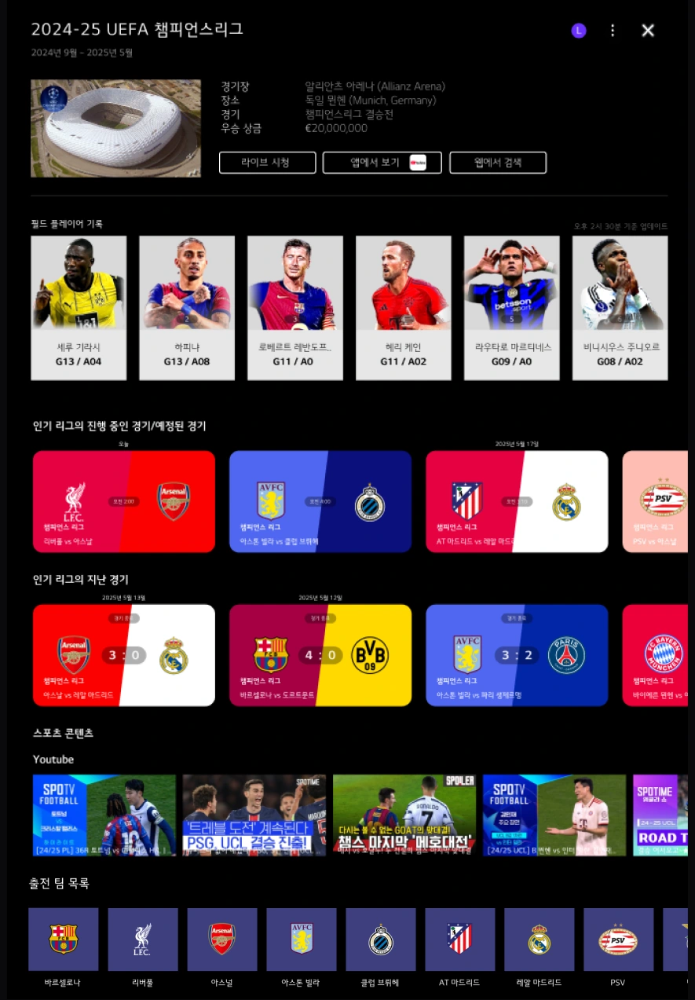
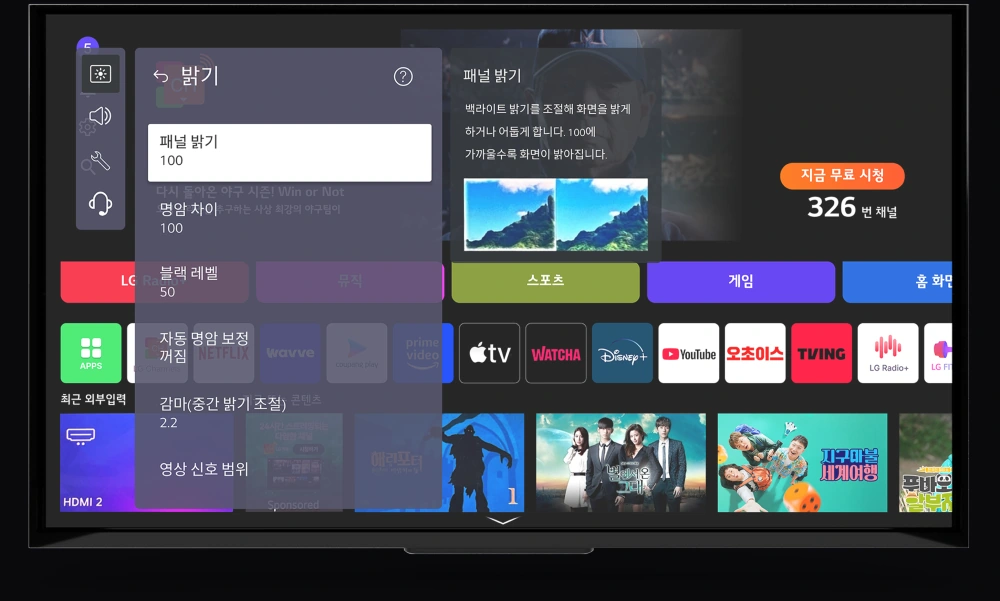

01 /
원거리 조작 환경
TV는 화면에서 떨어진 위치에서 리모컨으로 조작합니다.

LG ELECTRONICS / TV USABILITY RESEARCH
TV 화면의 사용성을 예측하고,
디자인 개선으로 연결하는 AI 디자인 툴.
표지는 UI를 재현한 목업입니다. 본문의 AI 툴 화면은 프로젝트 이후 개인 작업으로 디자인을 개선한 프로토타입입니다.
TV는 원거리에서 리모컨으로 조작되며, 다양한 콘텐츠와 기능이 하나의 화면에 모입니다.
이러한 환경에서 UI의 사용성을 정량적으로 설명하고 설계에 활용할 기준이 필요했습니다.

01 /
TV는 화면에서 떨어진 위치에서 리모컨으로 조작합니다.
02 /
다양한 콘텐츠와 설정 기능이 하나의 화면에 모입니다.
03 /
따라서 화면 요소와 사용성의 관계를 실험을 통해 확인할 필요가 있습니다.
사용성에 영향을 미치는 요인을 실험으로 도출하고, 예측 모델과 AI Design Tool로 연결해 디자인 의사결정을 지원하고자 했습니다.
webOS 기능과 사용자 목적을 분석해 평가 대상을 선정
2수준 실험을 통해 사용성에 영향을 미치는 주요 요인 확인
3수준 실험 데이터를 바탕으로 사용성 예측 모델 개발
평가·진단·개선안 검토를 지원하는 툴로 연구 결과 구체화
webOS 기능 및 사용자 목적 나열을 통한 시퀀스 유형 선정
webOS의 다양한 기능을 사용자 경험 관점에서 목적 기반으로 나열
사용자 목적을 3가지로 정의하고, 기능을 해당 목적에 따라 분류
음성 검색
app검색
AI 검색
OTT 플랫폼
위시리스트
스포츠
…
외부입력
쉬운 사용
퀵설정
…
사용자 여정 특성에 따라 시퀀스 유형을 3가지로 정의
명확한 목적을 가지고 검색 기능을 통해 콘텐츠로 이동하는 과정
콘텐츠를 둘러보며 관심 있는 항목을 찾고 선택하는 과정
원하는 사용 환경에 맞게 TV의 설정과 기능을 조정하는 과정
실제 UI 환경에서 가장 빈번하게 사용되는 대표 화면을 매핑 및 선정
Q카드 / 스포츠


유사 레이아웃으로 탐색형 이동과 목적형 이동 시퀀스 통합
퀵 설정 페이지

50여 건의 선행 문헌 및 가이드라인 분석 후, 출현 빈도수 기반으로 22개 핵심 요인 선별
Size
Layout
Length
Font Size
Layout
Size
Layout
Category Count
Item Count
Size
Count
Alignment
Size
Clearance
Count
Alignment
Size
Clearance
Count
Alignment
Size
Clearance
분석의 중복성을 제거하고, 실제 UI 환경에서 측정 가능한 핵심 변수 중심으로 최적화



실험계획법(DOE)을 적용한 대안 평가 및 피실험자 조사를 통해 TV 사용성 최종 주요 요인 도출
탐색 효율성에 가장 큰 주효과를 미친 요인
인지 용이성과 타겟팅에 직결된 요인
도출된 주요 요인과 사용성 평가 데이터를 바탕으로, 사용성을 정량적으로 예측하고 최적화할 수 있는 모델을 구축
65.81%
모델 설명력 · 수정 결정계수 R²
실험에서 수집한 사용성 평가점수 변동의 약 65.81%를 설명하는 다항 회귀 모델입니다.
y = −8.31 + 0.613X₁ − 0.00089X₂ + 0.0477X₃ + … − 0.0963X₄X₆
79.20%
모델 설명력 · 수정 결정계수 R²
텍스트와 아이콘 크기, 두 요인의 교호작용을 반영해 사용성 평가점수 변동의 약 79.20%를 설명합니다.
y = −9.45 + 0.11377X₁ + 0.1302X₂ − 0.000311X₁² − 0.001714X₂² + 0.000264X₁X₂
출처: LG전자 × 동의대학교 UXU LAB, 최종보고 자료 p.17–20. 수정 결정계수는 모델 설명력을 나타내며, 예측 정확도나 사용성 개선율을 의미하지 않습니다.
평가 흐름을 중심으로 핵심 화면과 보조 기능을 구조화
API Key와 평가 모델 확인 · 새 평가 시작 · 이전 분석 로그
이미지 업로드 · 영역 지정 · 요인 자동 인식
사용성 점수 · 요인별 영향도 · 권장 범위 비교
AI 개선 제안 · 요인별 조정 · 예상 개선 점수
As-Is / To-Be · 점수 비교 · 변경 사항
결과 비교 후 대안 추천 단계로 돌아가 조정합니다.
작업 이력대안 생성 이력 · AI 제안 내용 · 사용자 조정 내역 기록
전체 기능은 현황 입력, 문제 진단, 대안 추천의 흐름으로 구성
이미지 업로드
주요 요인 인식
점수 산출 · 등급화
요인 영향도 분석
AI 대안 생성
As-Is / To-Be 비교
API Key · 모델 정보 · 단계 간 이동
평가할 TV 화면을 업로드하고, 평가 유형과 주요 요인값을 확인·조정합니다.
사용성 점수와 요인별 영향을 확인하고, 우선 개선할 항목을 파악합니다.
AI 개선 제안을 바탕으로 대안을 생성하고, 기존 화면과 변경 내용을 비교합니다.
API 연결, AI 모델, 평가 기준과 저장·보안 옵션을 한곳에서 관리합니다.
LG전자 UI/UX 부서와 소통하며 진행한 산학 연구를 통해, 학교에서 배운 사용자 중심 설계가 실무에서 어떻게 논의되고 구체화되는지 경험할 수 있었습니다. 정해진 일정에 맞춰 중간 결과를 공유하고 피드백을 다음 작업에 반영하는 과정을 보며, 결과물의 완성도만큼 판단의 근거를 명확하게 전달하는 일도 중요하다는 것을 배웠습니다.
박사·석사 선배들과 함께하며 실험 조건과 평가 지표를 검토하고, 분석 결과를 보고서와 발표자료로 정리하는 과정을 가까이에서 배울 수 있었습니다. 화면을 만드는 데서 나아가, 왜 그렇게 설계했는지 설명할 수 있는 근거를 함께 정리해야 한다는 관점을 얻었습니다.
학부연구생으로 참여하다 보니 연구의 흐름과 분석 내용을 충분히 이해하면서도, 주어진 작업을 일정에 맞춰 따라가는 데 집중해야 했습니다. 특히 짧은 기간 안에 보고서와 발표자료를 준비할 때는 복잡한 연구 내용을 먼저 이해하고, 핵심을 추려 읽기 쉬운 형태로 정리하는 과정이 어려웠습니다.
내용을 더 깊이 이해하거나 제 관점에서 의견을 제안해 볼 시간이 부족했던 점은 아쉬움으로 남았습니다. 이 경험을 통해 작업 초기에 목적과 전달할 핵심을 정리하고, 이해가 부족한 부분을 빠르게 확인하는 것이 중요함을 느꼈습니다. 앞으로는 맡은 일을 완수하는 실행력에 더해, 연구의 맥락을 스스로 설명하고 의견을 제안할 수 있는 역량을 키우고자 합니다.